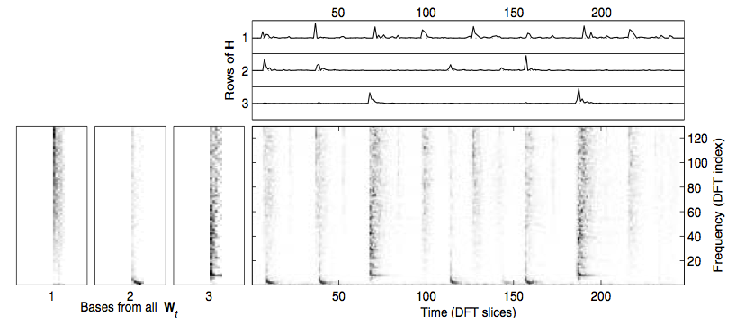
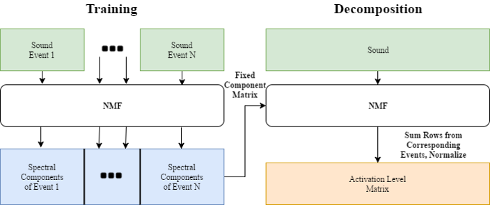

maxschuman2018@u.northwestern.edu
shuaihe2018@u.northwestern.edu
Northwestern University, EECS 352, Prof. Bryan Pardo
Event detection and labeling in auditory scenes is an intriguing and lively field of study. Accurate detection and comprehension of sounds such as a door closing, a person screaming, or a pipe bursting could offer important information to automated systems that actively listen to their surroundings.
Non-negative matrix factorization is a relatively simple process for compressing the information in a sparse, patterned matrix by finding a factorization using gradient descent techniques. In the past, NMF has proven useful in audio processing applications such as transcribing piano music, allowing a system to decompose inputted sound into components (spectrums of notes) and activations (representations of note occurrence over time). Though not the cutting edge of auditory scene labeling today, NMF can be used similarly to decompose an audio scene into its component sounds and activations.
To train and evaluate our model, we used the IEEE DCASE 2016 dataset for synthetic audio sound detection. The dataset contained short sound clips of 11 different events for training, as well as longer clips containing events and files with annotations of event onsets and offsets for evaluation.
We evaluated our system using an error rate metric used to evaluate systems in the DCASE challenge, the ratio of events that are incorrectly labeled, detected but not truly present, and not detected to the number of present events in a clip. We also tracked accuracy rate, the proportion of events in the evaluation clips our system correctly identified.
NMF aims to factorize a matrix X with dimensions m by n into a component matrix W with dimensions m by r and an activation matrix H with dimensions r by n, with r chosen beforehand, such that WH ≈ X. This can be done using gradient descent to minimize some cost function while updating the elements of W and H iteratively. Performing an NMF decomposition on a magnitude spectrogram should return unique repeating spectral components in W and a matrix of temporal activations of these components in H.
We used NMF to learn spectral components of examples of each sound class in the dataset, then appended these spectral components together to form an initial, fixed W to use in decomposing new sounds. We then condensed the resulting activations by summing the rows related to each learned event, taking a 10-frame moving average, and normalizing to yield a measure of each event’s activation level over time.
For inspection and display purposes, we trained smaller models on subsets of the 11 event classes in the DCASE data set, such as a “Clear Throat,” “Cough,” and “Door Slam” subset, and then decomposed synthesized sound samples containing one example of each event class in order.
We measured events by binarizing these level functions using a threshold of 0.5. On the DCASE evaluation set, we achieved an average error rate of 2.14, worse than the provided baseline error rate but better than several systems submitted for the challenge. Additionally, we achieved an average accuracy of 19.5%.